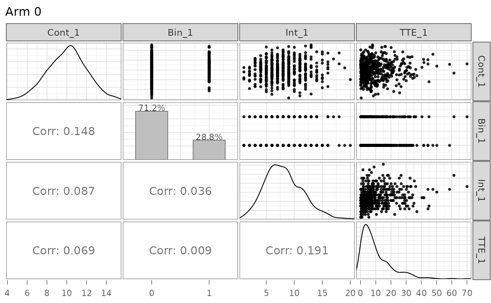
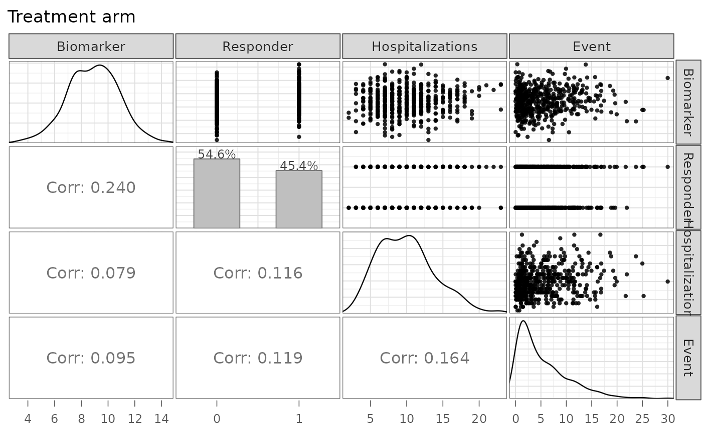

Pairwise visualization of simulated endpoints from a makeDataSim object
Source: R/utils.R
plot.makeDataSim.Rdplot.makeDataSim() produces a pairwise plot matrix for the simulated
endpoints stored in a "makeDataSim" object returned by
makeData.
Usage
# S3 method for class 'makeDataSim'
plot(x, arm = 0, names = NULL, show_y_axis = FALSE, title = NULL, ...)Arguments
- x
An object of class
"makeDataSim", created bymakeData.- arm
Numeric scalar indicating which treatment arm to plot.
If the simulated dataset includes a
trtcolumn,armmust be one of0, 1, ..., K - 1, whereKis the number of arms.If the object was generated in control-only mode (i.e., no
trtcolumn is present), thearmargument is ignored and all simulated observations are plotted.- names
Optional character vector used to relabel the plotted endpoint columns.
If supplied,
namesmust have length equal to the number of simulated endpoints. This affects only the displayed labels in the plot and does not modify the underlying data.- show_y_axis
Logical scalar. If
TRUE, show y-axis tick marks and labels on the left side of the plot matrix. Defaults toFALSE.- title
Optional character scalar used as the plot title. If
NULL, the title defaults to"Arm <k>"for the selected arm.- ...
Additional arguments reserved for future extensions of the plotting method. These are currently ignored.
Details
The method uses a local grid-based plot-matrix layout to display scatterplots in the upper triangle, marginal summaries on the diagonal, and Pearson correlation coefficients in the lower triangle for the selected study arm. This is intended as a quick diagnostic tool for inspecting the joint structure of simulated endpoints.
Displayed data
The plotting method extracts the simulated endpoint columns recorded in
x$meta$endpoint_names. These are the automatically renamed endpoint
variables, such as:
- Continuous endpoints
Cont_1,Cont_2, ...- Binary endpoints
Bin_1,Bin_2, ...- Count endpoints
Int_1,Int_2, ...- Time-to-event endpoints
TTE_1,TTE_2, ...
Columns
such as trt, Status_*, and enrollTime are not included
in the pair plot.
Panel layout
The plot matrix is configured as follows:
upper triangle: scatterplots,
diagonal: density plots for continuous-style endpoints and percentage bar plots for binary endpoints,
lower triangle: Pearson correlation coefficients without significance stars,
strip labels: endpoint names shown across the top and right side of the matrix,
title:
"Arm <k>"for the selected arm.
See also
summary.makeDataSim for
numerical summaries of the simulated data.
Examples
ep1 <- list(
endpoint_type = "continuous",
baseline_mean = 10,
sd = 2,
trt_effect = -1
)
ep2 <- list(
endpoint_type = "binary",
baseline_prob = 0.30,
trt_prob = 0.45
)
ep3 <- list(
endpoint_type = "count",
baseline_mean = 8,
trt_count = 10,
size = 20
)
ep4 <- list(
endpoint_type = "time-to-event",
baseline_rate = 0.08,
censoring_rate = 0.02,
trt_effect = 0.70
)
R4 <- corr_make(
num_endpoints = 4,
values = rbind(
c(1, 2, 0.20),
c(1, 3, 0.10),
c(1, 4, 0.10),
c(2, 3, 0.15),
c(2, 4, 0.05),
c(3, 4, 0.20)
)
)
sim_obj <- makeData(
correlation_matrix = R4,
sample_size_per_group = 500,
SEED = 1,
endpoint_details = list(ep1, ep2, ep3, ep4)
)
## Plot control arm
plot(sim_obj)

## Plot treatment arm with custom labels
plot(
sim_obj,
arm = 1,
names = c("Biomarker", "Responder", "Hospitalizations", "Event"),
title = "Treatment arm"
)
